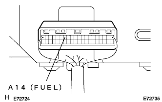
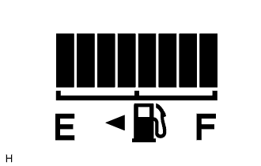

メーター&ゲージシステム 機能点検 |
基本点検
SST(トヨタエレクトリカルテスター)を使用して、バッテリー電圧を点検する。
ヒューズ切れ、ワイヤハーネス断線、短絡、コネクタの接続不良など、目視で点検できる箇所の点検を行なう。
断芯点検
IGスイツチをOFF→ONにした時、各インジケータ·ウォーニングランプが点灯→消灯することを点検する。
| インジケータ·ウォーニングランプ | IGスイツチ | 点灯状況 |
|---|---|---|
| ドアウォーニング | OFF→ON | - |
| 水温インジケータ(L) | OFF→ON | - |
| 運転席シートベルトウォーニング | OFF→ON | - |
| オイルプレッシャウォーニング | OFF→ON | 点灯→消灯 |
| CHARGウォーニング | OFF→ON | 点灯→消灯 |
| CHECK ENGINEウォーニング | OFF→ON | 点灯→消灯 |
| ブレーキウォーニング | OFF→ON | 3秒間点灯→消灯 |
| ABSウォーニング | OFF→ON | 3秒間点灯→消灯 |
| 水温ウォーニング(H) | OFF→ON | 6秒間点灯→消灯 |
| エアバックウォーニング | OFF→ON | 6秒間点灯→消灯 |
| インジケータ·ウォーニングランプ | IGスイツチ | 点灯状況 |
|---|---|---|
| 助手席シートベルトウォーニングランプ | OFF→ON | - |
作動点検
スピードメータテスタを使用して、スピードメータの指示誤差と積算計の作動を点検する。
| テスター指示標準速度[ｋｍ/ｈ] | メータ指示値許容範囲[ｋｍ/ｈ]( )は参考値を示す |
|---|---|
| 20 | (21-25) |
| 40 | 41.7-46.2 |
| 60 | 62.7-67.2 |
| 80 | 83.4-88.4 |
| 100 | 104.3-109.3 |
| 120 | 125.1-130.6 |
| 140 | 145.8-151.8 |
| 160 | 166.2-173.2 |
指針の振れ幅を点検する。
作動点検
回転計を使用して、エンジンを始動し、タコメータの指示誤差を点検する。
| 回転計指示[ｒ/min] | メータ指示値許容範囲[ｒ/min]( )は参考値を示す |
|---|---|
| 700 | 630-770 |
| 1000 | (900-1100) |
| 2000 | (1850-2150) |
| 3000 | 2800-3200 |
| 4000 | (3800-4200) |
| 5000 | 4800-5200 |
| 6000 | (5750-6250) |
作動点検
エンジンオイルプレツシヤスイツチASSYのコネクタを切り離す。
IGスイツチをONにする。
SSTを使用して、車両ワイヤハーネス側コネクタ端子をボデーアースと短絡させたときのオイルプレツシヤウォーニングランプの状態を点検する。
導通点検
SST(トヨタエレクトリカルテスター)を使用して、エンジンオイルプレツシヤスイツチ端子←→ボデーアース間の導通を点検する。
|  |
抵抗点検
|  |
SST(トヨタエレクトリカルテスター)を使用して、フユーエルレシーバゲージの各セグメント点灯時のコンビネーシヨンメータコネクタのA14(FUEL)端子←→ボデーアース間の抵抗を点検する。
| 点灯セグメントNo. | 抵抗[Ω] |
|---|---|
| 1(点滅) | 107±1-92.3±3 |
| 1-2 | 92.3±3-80.6±3 |
| 1-3 | 80.6±3-68.6±3 |
| 1-4 | 68.6±3-55.3±3 |
| 1-5 | 55.3±3-43.4±3 |
| 1-6 | 43.4±3-32.0±3 |
| 1-7 | 32.0±3-16.6±2 |
| 1-8 | 16.6±2以下 |
作動点検
IGスイツチをONにしたとき、シートベルトウォーニングランプが点滅し、タングプレートをセットしたときに消灯することを確認する。
回路点検
フロントシートインナベルトASSY RH のコネクタを切り離す。
IGスイツチをONにする。
SSTを使用して、車両ワイヤハーネス側コネクタ端子間を短絡させたときのウォーニングランプの状態を点検する。
作動点検
IGスイツチをONにし、助手席に乗員が座った状態で助手席シートベルトウォーニングランプが点滅し、タングプレートをセットしたときに消灯することを確認する。
回路点検
フロントシートインナベルトASSY LH のコネクタを切り離す。
IGスイツチをONにする。
SSTを使用して、車両ワイヤハーネス側コネクタ端子間を短絡させたときのウォーニングランプの状態を点検する。
キャンセル設定
ODO 表示状態から IG キースイッチを OFF → ON(IG) にし、6秒以内に ODO/TRIP スイッチを 10秒以上押し続けた状態で保持する。
ODO / TPIP スイッチを押し続けた状態で以下のバックルスイッチ操作を行い、設定を行うブザーパターンを選択する。
| ブザーパターン | 操作方法 |
|---|---|
| 運転席·助手席シートベルトブザー | 運転席バックルスイツチ OFF → ON (シートベルト未装着 →装着 ) |
| 助手席シートベルトブザー | 助手席シートに着座した状態で、助手席バックルスイツチOFF→ON(シートベルト未装着 →装着 ) |
上記のバックルスイッチ操作を行うと、 ODO / TRIP 表示が [ b-on ] または [ b-oFF ] 表示になり、キャンセル設定モードに移行する。
キャンセルモード中、 ODO / TRIP スイッチを押す度に、キャンセルなし( b-on ) ←→ キャンセルあり ( b-oFF )選択が切り替わる。
選択後、10 秒以上のスイッチ無操作、または IG キースイッチ ON(IG) → OFF でモード解除となりキャンセルなし/キャンセルありが設定される。